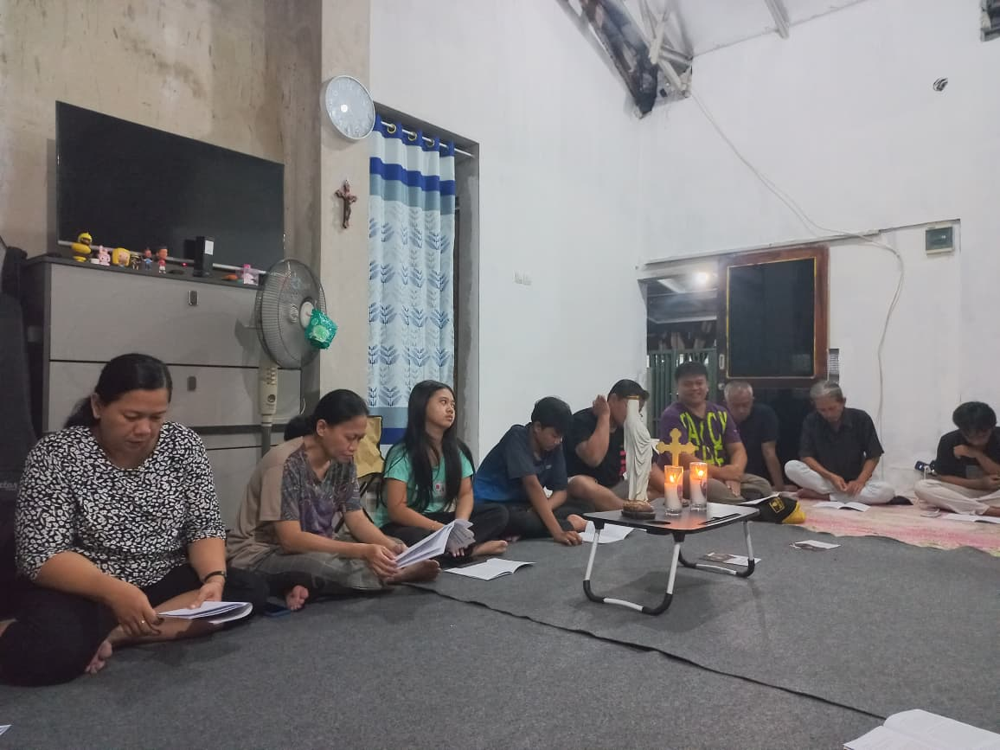
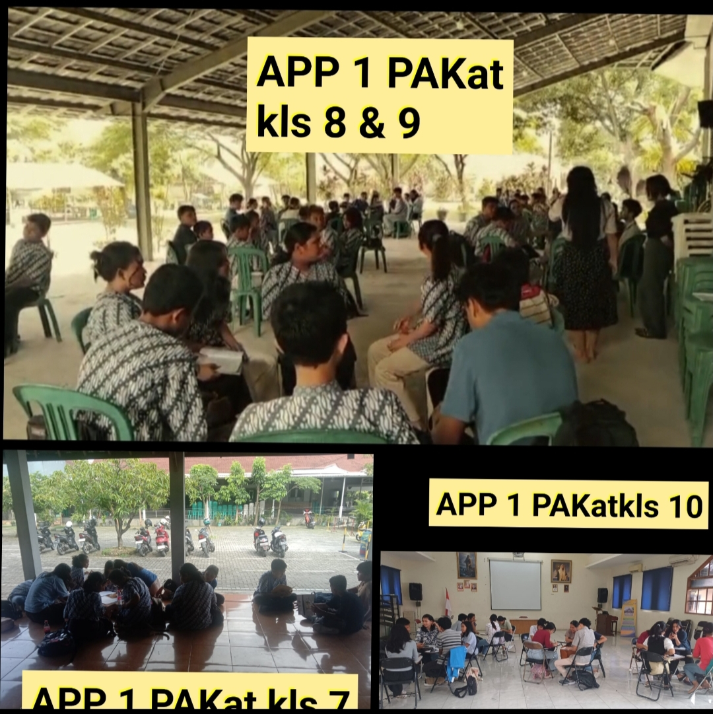
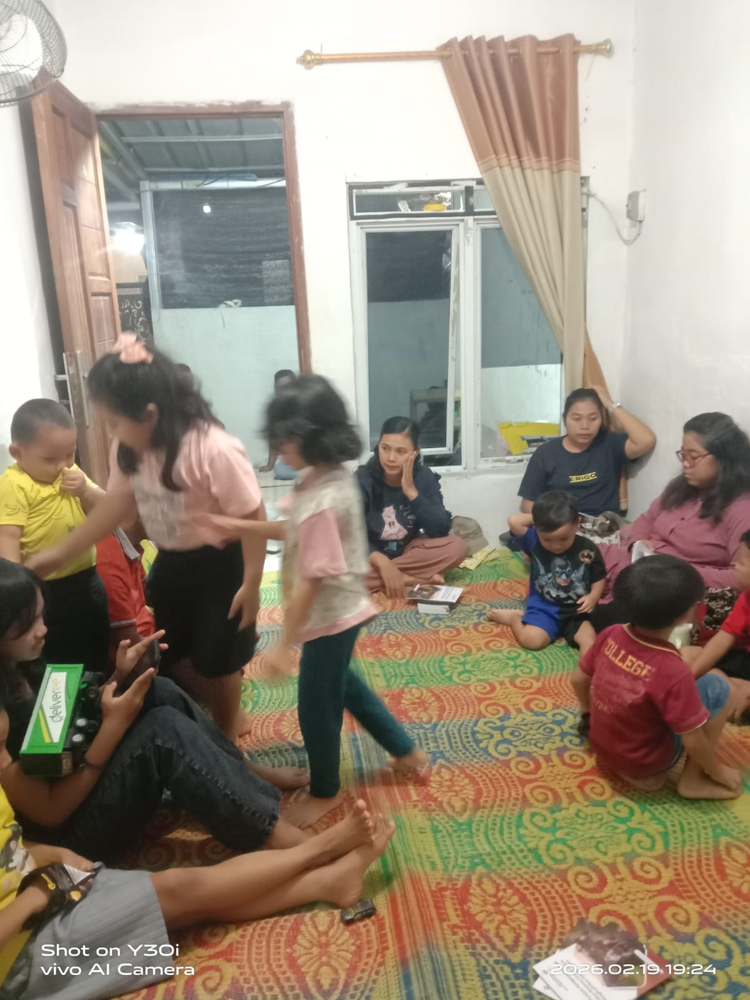
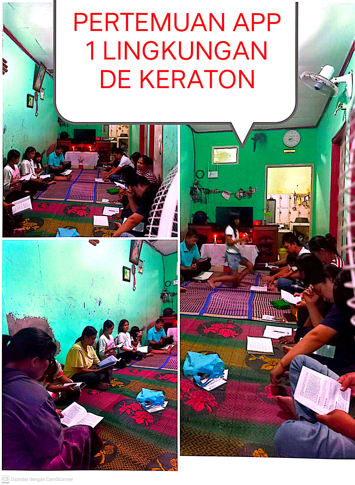
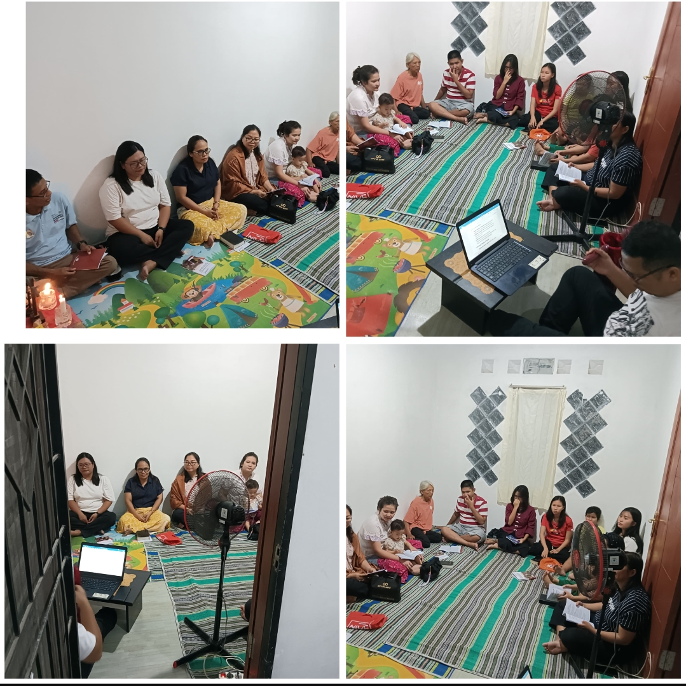
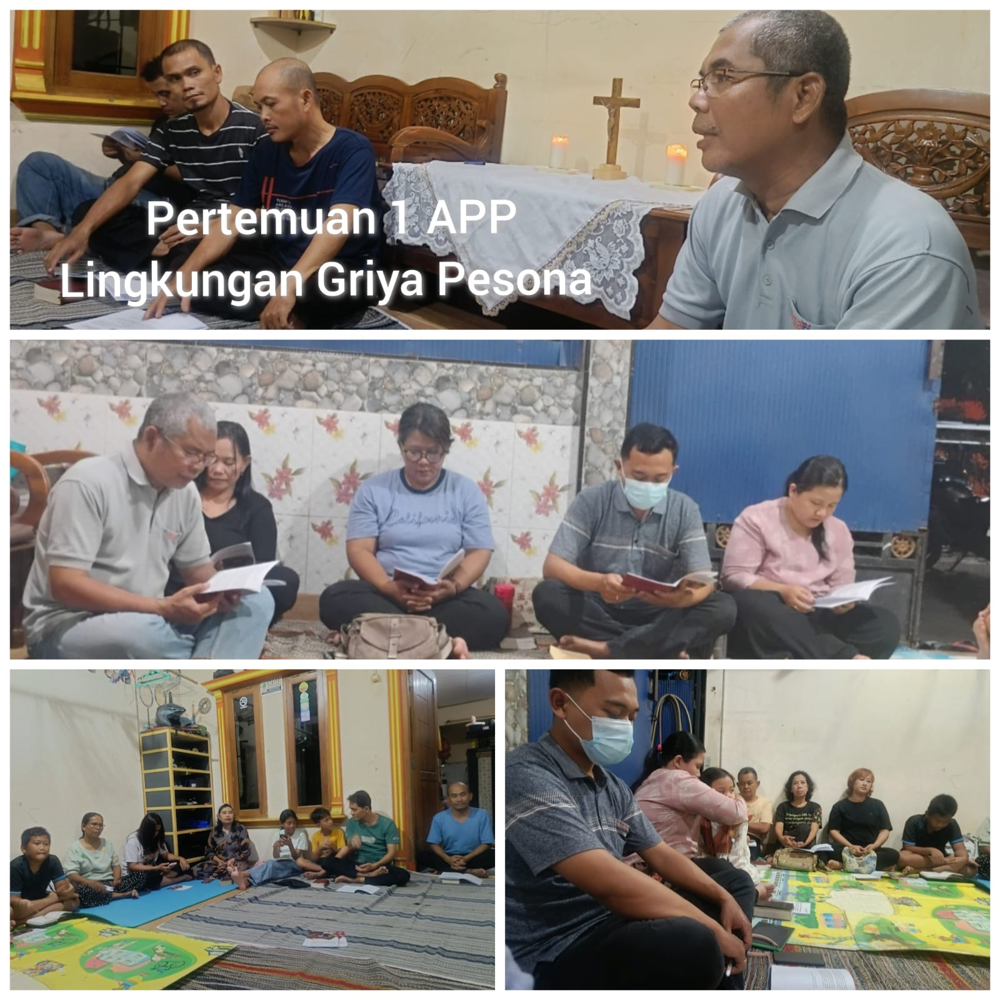
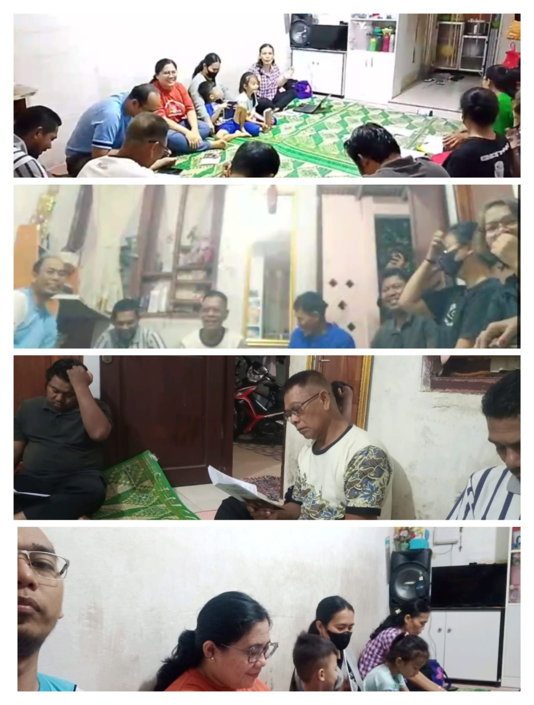
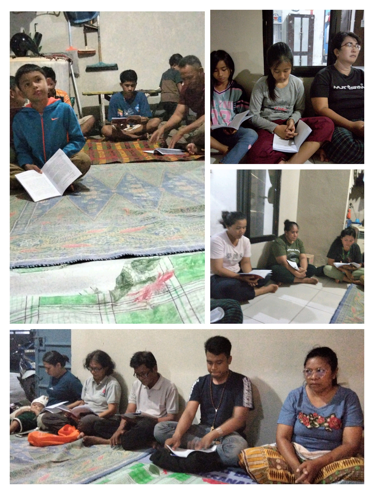
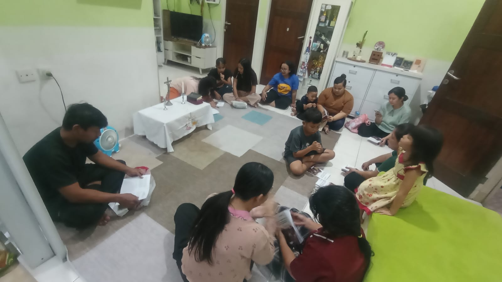
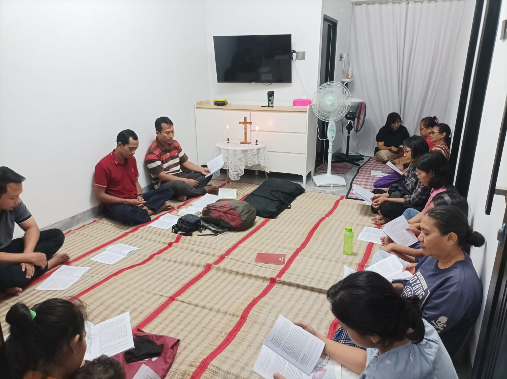

Aksi Puasa Pembangunan (APP) merupakan momentum pembaruan iman yang mengajak seluruh umat untuk semakin menghidupi panggilan sebagai Gereja yang misioner. Melalui tema “Gerakan Misioner Gereja dalam Menghadirkan Pengharapan”, setiap lingkungan didorong untuk tidak hanya merefleksikan iman secara pribadi, tetapi juga mewujudkannya dalam tindakan nyata yang membawa harapan di tengah kehidupan bersama. Kegiatan APP yang dilaksanakan di setiap lingkungan menjadi ruang perjumpaan, pendalaman Sabda, serta penguatan solidaritas antarumat. Dalam kebersamaan tersebut, Gereja hadir sebagai komunitas yang saling menopang, memperhatikan, dan membangun semangat pelayanan yang berkelanjutan. Dokumentasi ini disusun sebagai bagian dari laporan kegiatan sekaligus refleksi atas dinamika pastoral yang telah dijalankan. Diharapkan rangkaian kegiatan APP tahun ini semakin meneguhkan identitas kita sebagai Gereja yang bergerak, melayani, dan menghadirkan pengharapan bagi keluarga, lingkungan, dan masyarakat. Semoga semangat misioner yang telah tumbuh selama masa APP ini terus berbuah dalam kehidupan sehari-hari.
1. Lingkungan Dominikus Gading Elok-St. Yoseph

2. PAKAT-GKR

3. Lingkungan Santo Rafael anggadita-Santo paskalis

4. Lingkungan DE KERATON-ST BENEDIKTUS

5. Lingkungan Yohanes Bosco Majalaya 1-Santa Bunda Teresa

6. Lingkungan Griya Pesona-ST BENEDIKTUS

7. Lingkungan Santa Perawan Maria Kartika-Paskalis

8. Lingkungan St. Stefanus CKM 3-Santa Bunda Teresa

9. Lingkungan Cengkong 2-ST BENEDIKTUS

10. Lingkungan St Edmundus mustika prakarsa-ST BENEDIKTUS

11. Lingkungan St. Paulus Citra Kebun Mas 2-Santa Bunda Teresa
